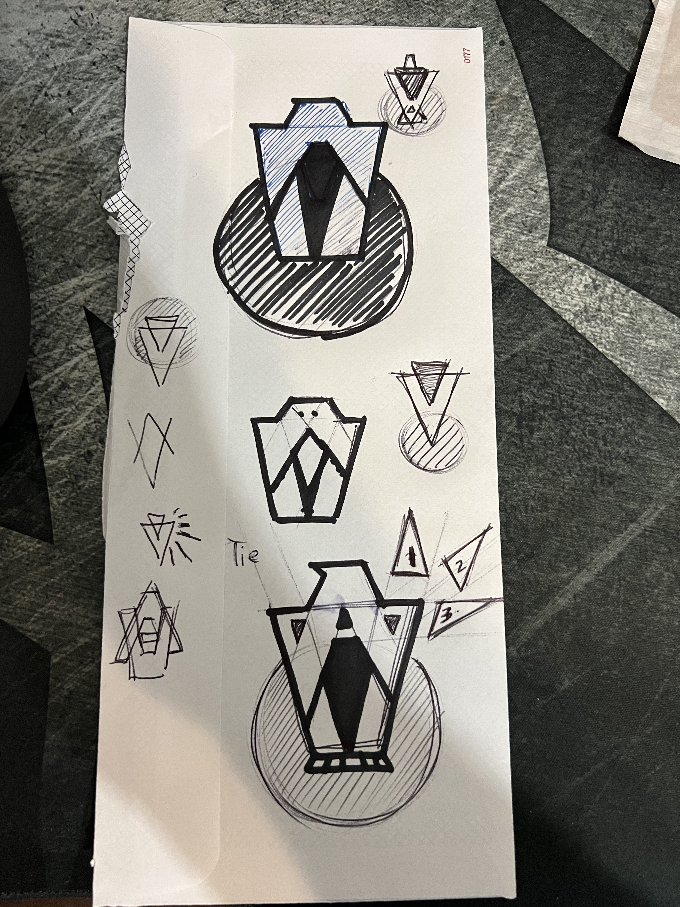

Personal Page
The purpose of this page is to show the different ideas that were used to make the final product.
This logo and gif were originally used for the website but ended up being scratched for something more professional and relatable to the VA.
